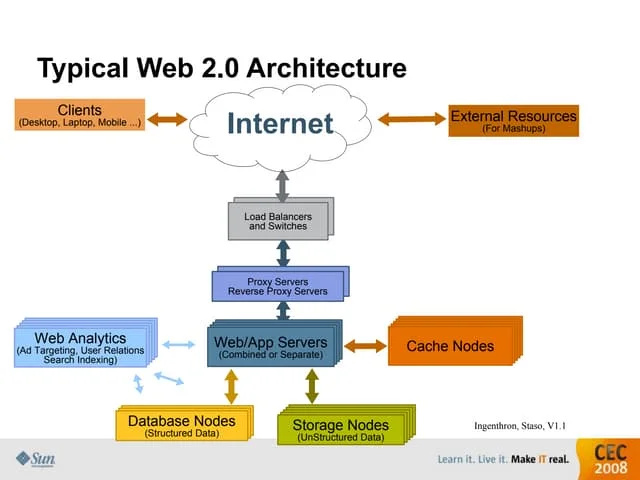

Home ｜
World Wide Web｜
TCP/IP｜
Web Browsers｜
Web Servers｜
Uniform Resource Locator｜
Domain Name Server｜
Hypertext Transfer Protocol｜
Intranet｜
Extranet｜
File Transfer Protocol｜
Hypertext Mark-up Language｜
Web 1.0｜
Web 2.0｜
Web 3.0｜
Web 4.0｜
Web 2.0
Web 2.0
This page explains Web 2.0, which is the second generation of the internet.
It is based on interaction and allows users to
create, share,
and communicate content online.
Unlike Web 1.0, Web 2.0 introduced platforms such as social media, blogs, and wikis where users can actively participate.
It improved online collaboration and made the internet more dynamic and engaging.

Advantages of Web 2.0
- Easy communication between users
- Faster sharing of information
- Allows online collaboration
- Supports interactive websites
- Access from different locations